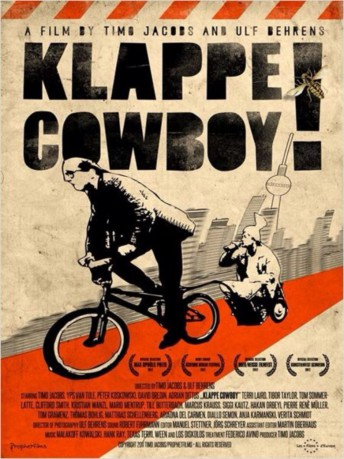

#7885 Klappe Cowboy!
 
 IMDB-Wertung: 5.5 / 10
IMDB-Wertung: 5.5 / 10  Metascore: 0
Metascore: 0 
Das selbsternannte Regietalent Cowboy kommt mit dem Ziel nach Berlin, endlich einen großen Film zu drehen. Selbstbewusst nimmt er jeden Auftrag an, nur um ihn konsequent in die Katastrophe zu führen. Als Cowboy die Künstlerin Yps kennenlernt und mit ihr einen Kunstporno dreht sticht er in ein künstlerisches Wespennest, welches seine dilettantischen Qualitäten bei weitem übersteigt.
Jahr: 2012
Dauer: 83 Minuten
FSK: 6
Land: Deutschland Studio: KNM Home EntertainmentTonspuren:
Untertitel:
Auflösung: 1080p (1920x1080) Größe: 4218 MB
Genre: Komödie
Regisseur: Ulf Behrens, Timo Jacobs
Drehbuch: Federico Avino
Soundtrack: Malakoff Kowalski
Darsteller:
 Timo Jacobs als Cowboy
Timo Jacobs als Cowboy- Kristian Nekrasov als Michi
 Anja Karmanski als Stripper 1
Anja Karmanski als Stripper 1 Milton Welsh als Art Lecturer (uncredited)
Milton Welsh als Art Lecturer (uncredited)- Peter Koskowski als Kinski
- Yps van Tule als Yps
 David Bredin als Molle
David Bredin als Molle- Adrian Dittus als Säsch
- Texas Terri als Texas Terri
- Tibor Taylor als Fischpeter
- Tom Sommerlatte als Nachtigall
- Clifford Smith als Rainer
- Mario Mentrup als Pornoproduzent
- Till Butterbach als HateArt Dude 1
- Marcus Krauß als HateArt Dude 2
- Siggi Kautz als Ali Moroder
- Hakan Orbeyi als Store Owner
- Pierre René Müller als Head of Psychiatric Clinic
- Albrecht Hirche als Filmfest Host 'Horst'
- Tom Gramenz als The Young Cowboy
- Thomas Bohlig als Tommy
- Matthias Schellenberg als Michis Left Hand
- Ariadna del Carmen als Bettina
- Mikael als Jens
- Nina Bernards als Hostess of Jens
- Heiko Schramm als Texas Terri's Guitarist
- Diallo Semon als Backgammon Player
- Verita Schmidt als Stripper 2
- Lucy Bacher als Kid 1
- Lino Bacher als Kid 2
- Folker Albrecht als Kid's Dad
- Danny Vogeley als Cinema Audience 1
- Sarah Hostettler als Cinema Audience 1
- Jan Silberberg als Cinema Audience 1
- Heiko Reichelt als Cinema Audience 1
Datei: X:\2012(G-M)\Klappe Cowboy! (2012, FSK6, 1920x1080).mkv seit 02.01.2018
Festplatte: HD 2012(A-M)
 Es gibt insgesamt 112 Filme in der Gruppe '2012(G-M)'
Es gibt insgesamt 112 Filme in der Gruppe '2012(G-M)'